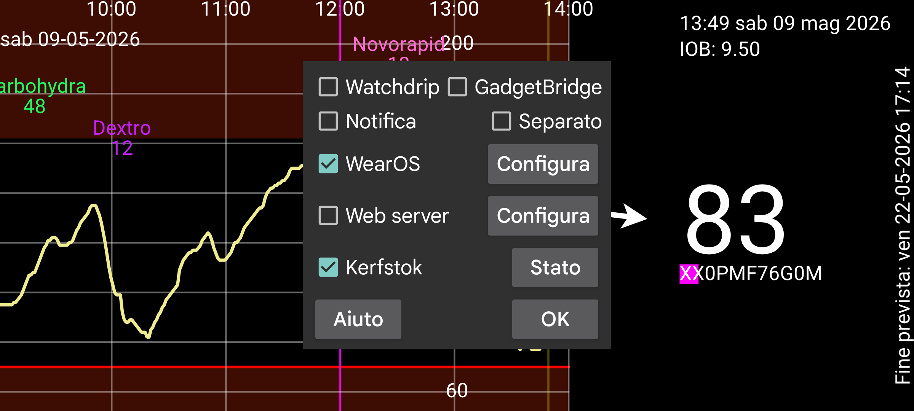

Attualmente, Juggluco ha sette modi per ottenere i valori del glucosio sul tuo orologio.
Quando Notifica è attivata, viene creata una notifica Android ogni volta che arriva un nuovo valore del glucosio. Su alcuni orologi le notifiche vengono inviate all'orologio solo quando viene creata una nuova notifica, per essi devi attivare Separato. Per questi orologi devi anche attivare Separato per ricevere notifiche di allarme sull'orologio.
Attivando questo, Juggluco invia i valori del glucosio a Watchdrip+. Watchdrip+ invia watchface, che mostrano i valori del glucosio, agli orologi MiBand/Amazfit.
GadgetBridge rende possibile visualizzare informazioni meteorologiche sugli orologi MiBand/Amazfit. Con l'opzione Gadgetbridge attivata, Juggluco invierà i valori del glucosio a GadgetBridge fingendo che siano informazioni meteorologiche. Questo ha il vantaggio rispetto a Watchdrip di essere molto più veloce, ma ha lo svantaggio che vengono visualizzate meno informazioni. Juggluco mette il valore del glucosio e una freccia di direzione nella posizione del meteo. Questa posizione viene visualizzata sotto Meteo sull'orologio. Non ho trovato alcuna watchface che visualizzi questa posizione. Solo per mmol/L: il valore prima del punto è inserito nella temperatura massima e il valore dopo il punto nella temperatura minima. I valori di mg/dL sono troppo grandi per le temperature, per questo motivo l'ultima cifra è inserita nella temperatura minima e i numeri prima dell'ultima cifra nella temperatura massima. Quindi 106 mg/dL diventa: temperatura massima 10, temperatura minima 6.
La direzione di variazione determina l'icona del meteo: la neve è glucosio in calo, la pioggia è glucosio in aumento. Viene anche inserita nella temperatura corrente. Maggiore di zero significa glucosio in aumento, minore di zero significa glucosio in calo.
Kerfstok è un'app per orologio su cui puoi inserire numeri (come dosi di insulina), ma visualizza anche il valore corrente del glucosio. Immediatamente quando arriva un nuovo valore del glucosio, Juggluco lo invia a Kerfstok. Quindi Kerfstok visualizza sempre il valore del glucosio più recente. Kerfstok può anche registrare tutte le attività supportate da Garmin e può visualizzare velocità e distanza. Vedi Orologio->Stato Kerfstok-> Aiuto e https://www.juggluco.nl/Kerfstok
Le app possono ricevere i valori del glucosio da uno dei broadcast del glucosio inviati da Juggluco e inviare questi valori del glucosio a un orologio. Ad esempio G-Watch (TizenOS o WearOS) può ricevere i valori del glucosio dal Broadcast Glucodata (vedi Menu sinistro->Impostazione->Scambio dati).
Juggluco incorpora un webserver xDrip/Nightscout . Questo rende possibile usare direttamente le app per orologio xDrip con Juggluco. xDrip mostra un nuovo valore del glucosio solo ogni 5 minuti, mentre Juggluco mostra un nuovo valore del glucosio ogni minuto. Juggluco invia anche alle app per orologio xDrip il valore del glucosio più recente. I valori del glucosio sono inviati agli orologi solo se l'app per orologio li richiede, quindi quanto siano vecchi i valori visualizzati dipende da quando l'app per orologio li richiede. Ad esempio le watchface e i campi dati sugli orologi Garmin chiedono un valore del glucosio solo ogni 5 minuti. Tramite xDrip, questo spesso portava a valori del glucosio vecchi di 10 minuti. Quando connesse direttamente a Juggluco, queste watchface mostrano valori del glucosio vecchi fino a 6 minuti. Sotto Garmin, se non puoi usare Kerfstok, hai le seguenti opzioni per ricevere regolarmente un valore del glucosio recente. Un widget xDrip (https://apps.garmin.com/en-US/apps/73115e04-dc9f-4765-ad88-e7ae283ce995) può essere usato anche durante la registrazione di un'attività. Quindi se hai una mano libera, puoi passare a questo widget xDrip mentre registri un'attività con un'app sport Garmin standard. C'è anche un'app sport xDrip che aggiorna il suo valore del glucosio regolarmente: https://apps.garmin.com/en-US/apps/aaf6533b-bca1-4365-9131-9f882f6f148c. Puoi provare a partire in un momento, in modo che richieda un valore del glucosio subito dopo che sia disponibile. I campi dati e le watchface sarebbero la soluzione ideale, ma le restrizioni imposte da Garmin le rendono di poco valore.
In precedenza potevi usare il webserver in Juggluco con una watchface per Fitbit: https://glancewatchface.com . Da metà 2024, le app di terze parti non sono più consentite sugli orologi Fitbit: https://www.techradar.com/health-fitness/fitbit-watches-in-the-eu-will-lose-third-party-apps-and-watch-faces-heres-why . La regolamentazione UE potrebbe aver provocato questa decisione. Forse il possibile requisito di consentire app store alternativi su Wear OS: I tracker fitness semplici, senza app di terze parti, sono anche consentiti e possiamo diventarlo. Alcune persone sostengono che dopo aver cambiato la posizione negli USA, con l'uso di una VPN, possono nuovamente installare app di terze parti.
Per maggiori informazioni sull'interfaccia del webserver vedi https://www.juggluco.nl/Juggluco/webserver.html
Esiste una versione di Juggluco portata su Wear OS. Il display è adattato allo schermo più piccolo ed è stata aggiunta una watchface. La watchface può essere installata come una solita watchface Wear OS e visualizza accanto all'ora anche il valore corrente del glucosio ricevuto tramite Bluetooth.